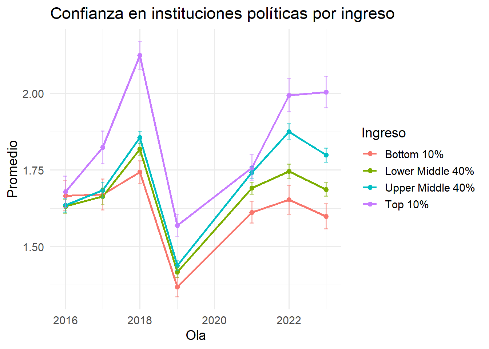
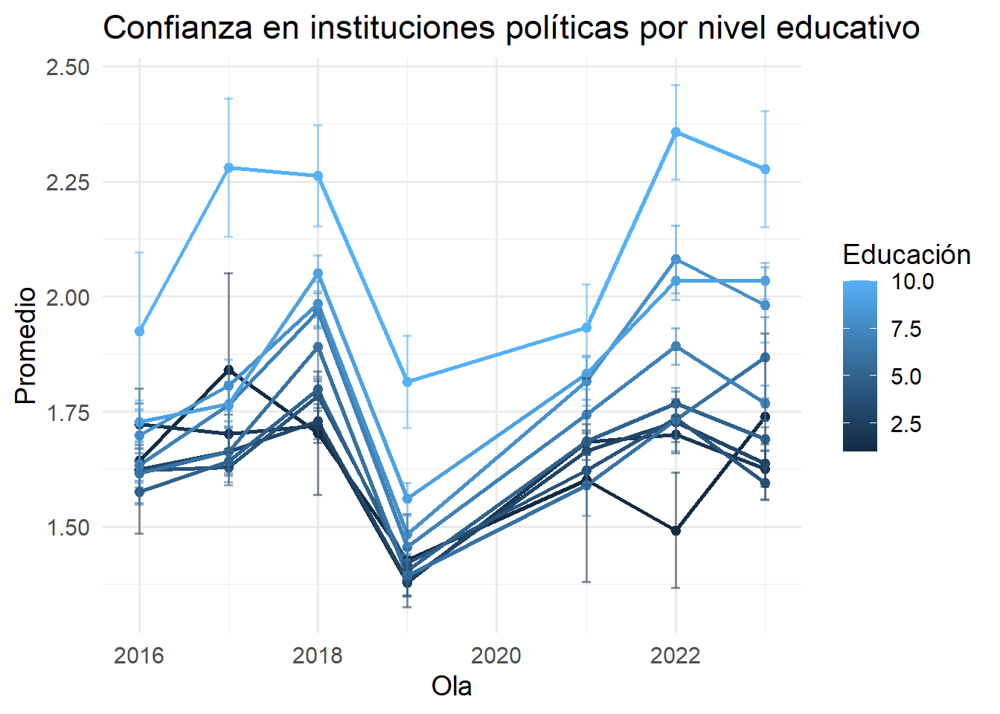
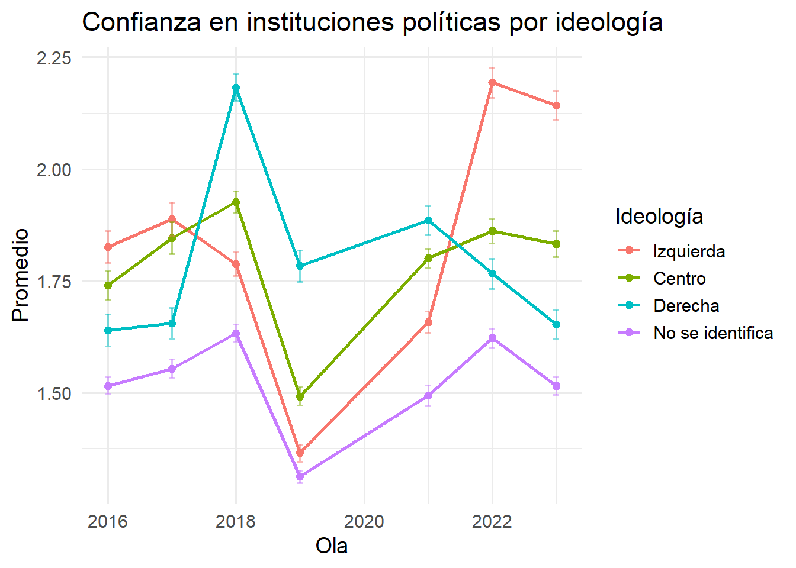

El Observatorio de Cohesión Social (OCS-COES) ha avanzado hacia una definición del concepto de cohesión social basada en Chan et al. (2006), con un enfoque bidimensional: Cohesión Horizontal (relaciones entre individuos y grupos) y Cohesión Vertical (interacciones entre individuos e instituciones).
Esta definición minimalista responde críticamente a aproximaciones previas que tendían a confundir los contenidos de la cohesión social con sus condiciones externas, tales como la pobreza, la igualdad de oportunidades o la tolerancia. El enfoque adoptado permite precisar los elementos constitutivos de la cohesión sin diluir su valor analítico, estableciendo una distinción clara entre componentes subjetivos (actitudes y percepciones) y objetivos (comportamientos y prácticas observables).
Primer esfuerzo del OCS para medir cohesión con un enfoque minimalista, estuvo orientado a la comparación regional. Esta propuesta se estructuró en torno a indicadores centrales disponibles en encuestas internacionales:
Cohesión Horizontal
Seguridad Pública: Incorpora condiciones objetivas (victimización por delitos) y percepciones subjetivas (percepción de seguridad en el barrio)
Confianza Interpersonal: Medida a través de la confianza en los vecinos como expresión de disposiciones cooperativas en el entorno cercano
Cohesión Vertical
Confianza en Instituciones: Confianza en el congreso, poder judicial y partidos políticos
Actitudes hacia la Democracia: Apoyo y satisfacción con el sistema democrático
Justicia Distributiva: Acuerdo con la redistribución igualitaria de ingresos
Esta aproximación permitió establecer una línea base para la comparación entre países de América Latina, aunque con limitaciones derivadas de la disponibilidad de variables en encuestas no diseñadas específicamente para medir cohesión social.
Propuesta comprehensiva para Chile que aprovecha la riqueza de datos de la Encuesta Longitudinal Social de Chile (ELSOC). Esta propuesta operacionaliza la cohesión mediante la distinción entre indicadores subjetivos (actitudes) e indicadores objetivos (prácticas), organizándose en dimensiones específicas:
Cohesión Horizontal
Sentido de Pertenencia: Identificación y orgullo nacional
Confianza Social: Confianza interpersonal generalizada y confianza en vecinos
Cohesión y Sociabilidad Barrial: Integración, identificación y calidad de relaciones vecinales (subdividida en cohesión barrial propiamente tal y sociabilidad local)
Participación y Prosocialidad: Voluntariado, donaciones, apoyo material y acompañamiento a terceros
Cohesión Vertical
Confianza en Instituciones y Satisfacción con la Democracia: Confianza en instituciones políticas, de orden y privadas, junto con satisfacción democrática
Participación Política: Acciones concretas (firmas, manifestaciones, huelgas, uso de redes sociales) e interés político (declarado y manifestado)
Percepción de Justicia Distributiva: Percepciones sobre meritocracia y elementos determinantes para la movilidad social ascendente
Las propuestas de Vis-Latam y Castillo et al. (2021) presentan diferencias significativas:
Nivel de granularidad: ELSOC permite observar dimensiones y subdimensiones con mayor precisión que las encuestas regionales de LAPOP/WVS.
Consistencia teórica y estadística: Algunas subdimensiones presentes en una propuesta no aparecen en la otra debido a limitaciones de datos o ajustes metodológicos. Por ejemplo, el comportamiento prosocial se intentó integrar con datos de WVS, pero aunque mostró consistencia interna aceptable, no correlacionaba adecuadamente con otros factores de su dimensión.
Estructura factorial: Aunque ambas propuestas integran confianza interpersonal, la versión ELSOC la considera un factor de segundo orden mientras que en LAPOP es de primer orden.
Cobertura temática: No comparten ningún factor de subdimensión en forma idéntica, reflejando adaptaciones al contexto y a las fuentes de datos disponibles.
La nueva propuesta de medición de parte del OCS representa un avance significativo que integra y expande las mediciones previas con innovaciones conceptuales y metodológicas que permiten capturar con mayor precisión las dinámicas de cohesión en Chile.
La dimensión horizontal se estructura en tres grandes áreas que integran condiciones objetivas, percepciones subjetivas y prácticas sociales:
La seguridad constituye un eje central de la cohesión horizontal, incorporando tanto condiciones objetivas como percepciones subjetivas de resguardo en el entorno inmediato. A diferencia de propuestas anteriores que trataban la seguridad de manera tangencial, la nueva propuesta la reconoce como una dimensión autónoma esencial para la vida comunitaria.
Estructura de medición:
Seguridad Objetiva
Lo anterior permite capturar la exposición real a situaciones de riesgo en el entorno inmediato
Seguridad Subjetiva
Frecuencia percibida de tráfico de drogas en el vecindario
Satisfacción con la seguridad del barrio
Percepción individual de sentirse seguro o inseguro en el entorno
Esto permite capturar la vivencia subjetiva y la evaluación personal del entorno
La distinción entre seguridad objetiva y subjetiva permite observar tanto la realidad material del entorno como la experiencia vivida de los residentes, reconociendo que ambas dimensiones pueden no coincidir y que ambas son relevantes para la cohesión social.
Los vínculos con el territorio representan un componente fundamental de la cohesión horizontal que va más allá de la simple residencia. Esta dimensión profundiza la medición de cohesión barrial de propuestas anteriores, distinguiendo analíticamente entre el sentido de pertenencia y la evaluación de la calidad de las relaciones.
Estructura de medición:
Pertenencia al Barrio
Considerar que el barrio es ideal para mí
Sentirse integrado en el barrio
Identificarse con la gente del barrio
Percibir el barrio como parte de la propia identidad
Lo anterior permite capturar los vínculos identitarios y afectivos con el territorio
Satisfacción con el Barrio
Facilidad para hacer amigos en el barrio
Percepción de que la gente es sociable
Percepción de que la gente es cordial
Percepción de que la gente es colaboradora
Esto permite evaluar la calidad de las relaciones vecinales y las dinámicas sociales del territorio
La separación entre pertenencia y satisfacción permite observar que una persona puede sentirse identificada con su barrio pero evaluar negativamente las relaciones sociales (o viceversa). Esta distinción captura aspectos complementarios: los vínculos identitarios y la calidad de las interacciones cotidianas.
La dimensión vertical se reorganiza en cuatro grandes áreas que capturan las múltiples facetas de la relación entre ciudadanos e instituciones:
La confianza en instituciones constituye un componente subjetivo fundamental de la cohesión vertical, reflejando la percepción de fiabilidad y legitimidad de organismos centrales para el funcionamiento social. La propuesta distingue tipos de instituciones que cumplen funciones diferenciadas.
Estructura de medición:
Confianza en Instituciones Políticas
Confianza en el Gobierno
Confianza en el Congreso Nacional
Confianza en los Partidos Políticos
Capturar la confianza en el sistema democrático-representativo
La participación política constituye el componente objetivo central de la cohesión vertical, pero debe entenderse en conjunto con las actitudes que la sustentan. La propuesta integra tres subdimensiones que tradicionalmente se medían por separado, reconociendo su interdependencia analítica. Estructura de medición:
Participación Política
Frecuencia de firma de cartas o peticiones apoyando causas
Frecuencia de asistencia a marchas o manifestaciones pacíficas
Frecuencia de participación en huelgas
Frecuencia de uso de redes sociales para opinar en temas públicos
Capturar acciones concretas de involucramiento político
Autoeficacia Política
Acuerdo con que votar es un deber ciudadano
Acuerdo con que mi voto influye en el resultado
Acuerdo con que votar permite expresar mis ideas
Medir la percepción sobre la relevancia y efectividad de la participación
Interés Político
Nivel declarado de interés en la política
Frecuencia de hablar de política con familiares o amigos
Frecuencia de informarse sobre política en medios
Capturar el compromiso subjetivo con lo político
La integración de participación, autoeficacia e interés en una sola dimensión permite observar simultáneamente las prácticas ciudadanas, las percepciones de eficacia y el compromiso subjetivo. Esta estructura reconoce que son aspectos interrelacionados del vínculo político de los ciudadanos.
Las actitudes hacia el sistema político van más allá de la satisfacción democrática, incluyendo preferencias normativas sobre cómo debe organizarse el poder. La incorporación de preferencias autoritarias permite capturar tensiones y ambivalencias en las orientaciones políticas de la ciudadanía.
Estructura de medición:
Preferencias por Autoritarismo
Acuerdo con que más que derechos necesitamos un gobierno firme
Acuerdo con que el país necesita un mandatario fuerte
Acuerdo con que obediencia y disciplina son claves para una buena vida
Capturar actitudes favorables a gobiernos fuertes y disciplina social
Actitud hacia la Democracia
Medir la evaluación del sistema democrático actual
La incorporación de preferencias autoritarias como subdimensión autónoma permite observar tensiones entre apoyo democrático y preferencias por autoridad fuerte. Esta distinción es crucial para entender actitudes políticas ambivalentes, donde pueden coexistir insatisfacción democrática y rechazo al autoritarismo (o viceversa).
Las preferencias sobre la distribución de bienes en la sociedad constituyen un componente normativo fundamental de la cohesión vertical. A diferencia de propuestas previas centradas en meritocracia, esta versión se enfoca en las preferencias sobre el rol del mercado en el acceso a derechos fundamentales.
Estructura de medición:
Justicia Distributiva
Acuerdo con que es justo que quien tiene más dinero pueda acceder a mejores pensiones
Acuerdo con que es justo que quien tiene más dinero pueda acceder a mejor educación
Acuerdo con que es justo que quien tiene más dinero pueda acceder a mejor salud
Capturar preferencias normativas sobre mercado y derechos sociales
La reformulación hacia preferencias sobre el rol del mercado en derechos fundamentales (salud, educación, pensiones) permite capturar directamente las orientaciones normativas sobre justicia distributiva en áreas centrales del debate público chileno. Esta aproximación es más directa que las mediciones previas centradas en percepciones meritocráticas.
La propuesta OCS-ELSOC representa un avance sustantivo en la medición de cohesión social en Chile, integrando y expandiendo aproximaciones previas:
Innovaciones en Cohesión Horizontal
Innovaciones en Cohesión Vertical
Esta arquitectura integra condiciones objetivas, percepciones subjetivas, prácticas sociales y orientaciones normativas, manteniendo coherencia con el marco minimalista de Chan et al. (2006) mientras aprovecha las posibilidades que ofrece ELSOC para una medición comprehensiva de la cohesión social en Chile.